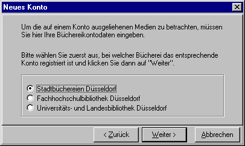
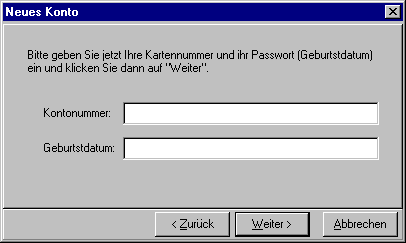
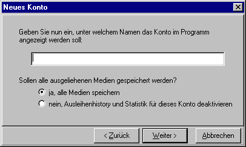
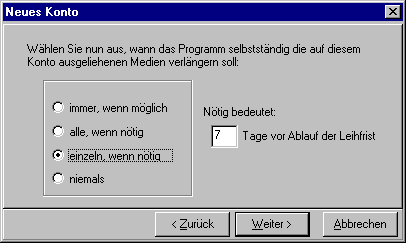

Neues Konto
Der "Neue Konto"-Dialog besteht aus 5 Teildialogen, in denen die nötigen Informationen zum Registrieren eines Büchereikontos in Videlibri eingegeben werden.Am unteren Fensterrand befinden sich die Buttons "Zurück" und "Weiter", mit denen man zwischen den Teildialogen wechseln kann.
Mit dem Button "abbrechen" kann man den Dialog verlassen.
Der Dialog beginnt mit der Frage nach der Bücherei zu der das Konto gehört:

Hier kann man, wie im Dialog beschrieben, einfach die Bücherei auswählen und auf weiter klicken.
Je nach Büchereiauswahl ändern sich einige Einstellungmöglichkeiten in den weiteren Dialogen.

Hier muss man wie bei den Onlinekatalogen der Bücherei die Nummer des Ausleihkontos und sein Passwort (bei der Stadtbücherei also sein Geburtsdatum) eingeben.
Gibt man hier falsche Daten ein, so erscheint später jedesmal die Fehlermeldung "Antwort nicht verstanden".
Bei der Uni.Bibliothek kann zur "Nummer" auch noch ein Buchstabe gehören.
(Technischer Hinweis: Die eingegebene Nummer wird zusammen mit der Bücherei-ID als Grundlage für die drei Dateinamen genommen, unter denen die Daten auf der Festplatte gespeichert werden)

Hier muss man zuerst den Namen eingeben unter dem das Konto angezeigt werden soll.
Dieser kann ohne Einschränkungen frei gewählt werden, man sollte aber (muss allerdings nicht) für jedes Konto einen eigenen nehmen, da es sonst verwirrend ist.
Die zweite Frage sollte man mit "ja" beantworten, es sei denn man möchte aus Geheimhaltungsgründen nicht, dass die Daten der ausgeliehenen Bücher dauerhaft auf der Festplatte gespeichert bleiben.
Wenn die Daten aber nicht gespeichert werden, können die erweiterten Funktionen des Programmes, also Anzeigen einer Statistik und eben das auflisten aller jemals ausgeliehenen Bücher, nicht funktionieren.

In diesem Dialog kann man auswählen, wie das Programm die Medien verlängern soll. Die Optionen bedeuten jeweils:
| immer, wenn möglich | Bei jeder Aktualisierung der Medien verlängert das Programm automatisch alle Bücher. Dies ist nur bei der Stadtbücherei sinnvoll, da die beiden anderen Büchereien, nur eine bestimmte Anzahl von Verlängerungen erlauben. |
| alle, wenn nötig | Das Programm verlängert bei einer Aktualisierung automatisch alle Medien, falls eines "bald" (siehe unten) abgegeben werden muss. Der Vorteil ist, dass alle Medien (abgesehen von vorgemerkten, o.a.) die gleiche Leihfrist haben. |
| einzeln, wenn nötig | Das Programm verlängert bei einer Aktualisierung automatisch alle Medien, die "bald" (s.u.) abgegeben werden müssen. Diese Option existiert nicht, falls die Stadtbücherei ausgewählt wurde, da dort alle Medien simultan verlängert werden müssen. |
| niemals | Videlibri verlängert die Medien niemals. |
Man gibt hierfür eine bestimmte Anzahl von Tagen ab, und bald abzugeben bedeuten dann, wenn das Medium innerhalb dieser Anzahl von Tagen abzugeben ist.
Alle Verlängerungseinstellungen gelten jeweils nur für ein Konto, sie können also für jedes Konto unterschiedlich sein.

In diesem letzten Dialog werden alle eingegebenen Daten nochmals zur Kontrolle angezeigt.
Ist man damit zufrieden, kann man das Konto mit dem Button "Erstellen" eben erstellen.
Anschließend wird man noch gefragt, ob man noch ein Konto erstellen will, bejaht man dieses, so beginnt der Dialog von vorne.